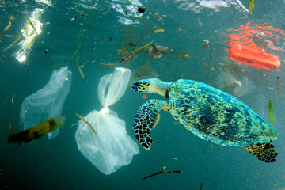
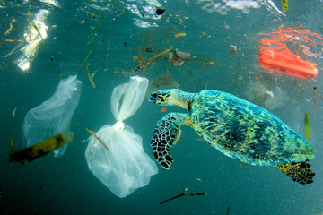
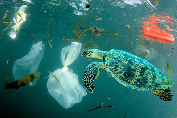

¿Que hacemos para evitar?
No tirar basura en el mar, utilizar menos los productos de plasticos y ayudar a cuidar la playa.

 

No tirar basura en el mar, utilizar menos los productos de plasticos y ayudar a cuidar la playa.
